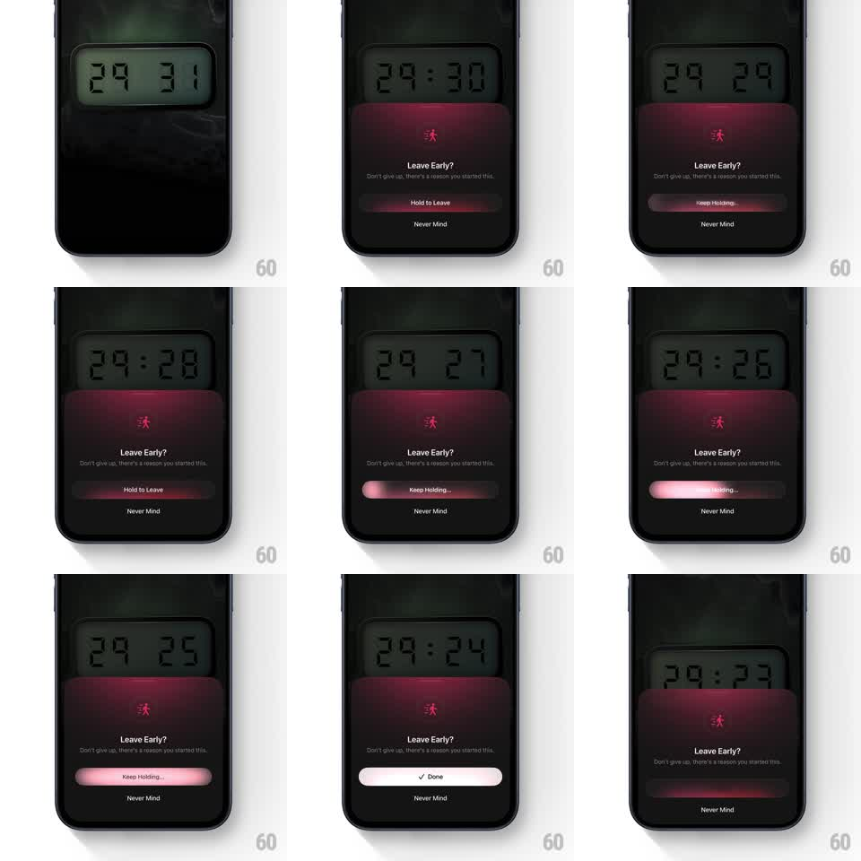

Media
Frame-by-frame

Rebuild this interaction 1:1: Opal's "Leave Early?" friction screen - a big segmented countdown timer runs above a red-gradient card begging you to stay ("Don't give up, there's a reason you started this."), and the only way out is holding "Hold to Leave" as a pink fill sweeps the button - while the timer digits keep flipping down.

Rebuild this interaction 1:1: Opal's "Leave Early?" friction screen - a big segmented countdown timer runs above a red-gradient card begging you to stay ("Don't give up, there's a reason you started this."), and the only way out is holding "Hold to Leave" as a pink fill sweeps the button - while the timer digits keep flipping down.
## Integration
Integration: stack-agnostic spec - springs given as stiffness/damping, timed motions as duration + curve; map every value to your framework and animation library of choice.
## Scene
Dark focus screen: large segmented-display countdown (29:31) in a rounded LCD-style window. Below: maroon gradient card with a running-figure icon, "Leave Early?" headline, guilt-trippy subline, "Hold to Leave" button, "Never Mind" text action.
## Motion spec
Pattern: live countdown + hold-to-confirm.
- Timer: digits flip down every second (split-flap style: top half folds down, 200ms) with the seconds digits always animating.
- Hold to Leave: touch-down switches the label to "Keep Holding..." (150ms); a pink fill sweeps left to right (~1.5s); releasing early snaps the fill back (200ms).
- Complete: button flashes white and swaps to "Done" with a check (150ms), holds 400ms, then the card slides down to dismiss (300ms).
- The card breathes very subtly (background gradient luminance +-5%, 4s) so the screen never feels frozen during the countdown.
## Calibration
- The countdown keeps running through the hold - the time pressure is the design.
- Pink/red fill (consequence color), not the app's primary - leaving should feel costly.
## Reduced motion
Digits set without the flap animation; hold fill sweeps plainly.
## Don't miss
- Split-flap digit animation is the hero detail - plain text swaps lose the LCD feel.
- "Never Mind" is the quiet exit that keeps you in the session; style it as a tertiary action.